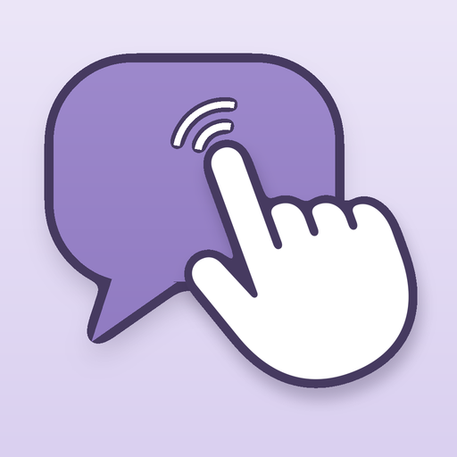
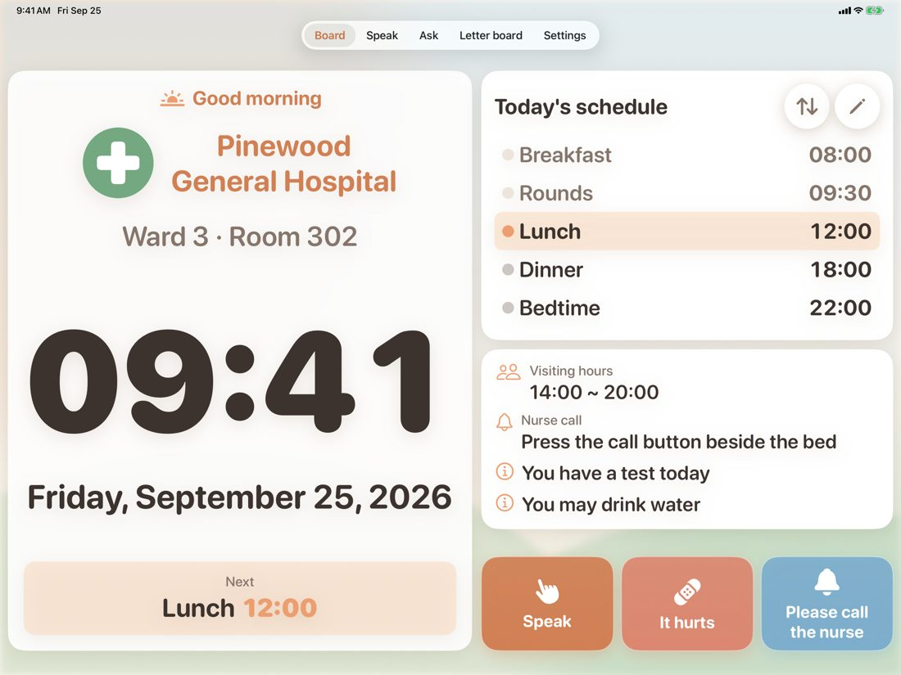
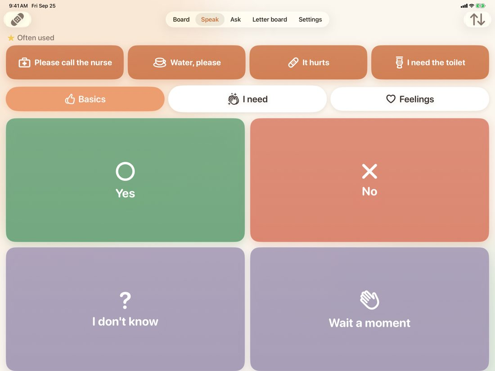
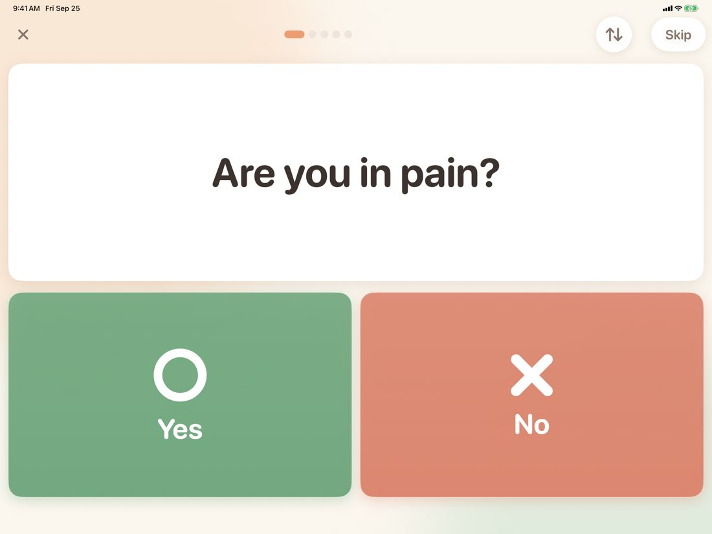

Point to talk at the bedside
Get it on the App Store


Patient language large on top, staff language small underneath. 7 languages.
Built-in sets or your own. A Yes leads to follow-ups such as how much and where it hurts.
Ask bed by bed; answers are saved per bed automatically. Bed numbers only, never names.
Free, with ads on staff screens only. No account. Everything stays on the device.